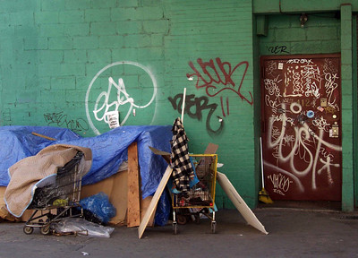

Will 311 Policy Changes Impact Homeless Encampment Response?
Homeless encampments reported to 311 will be automatically directed from the NYPD to the Department of Homeless Services (DHS), in a policy shift announced Sept. 22, 2026.
In 2026, Manhattan’s Community Board 4 (MCB4)—spanning the neighborhoods of Chelsea, Hell’s Kitchen and Hudson Yards—recorded the city’s second highest number of homelessness complaints to 311. In late September, the city reformed its 311 reporting policies, shifting homelessness encampment response from the NYPD to the Department of Homeless Services (DHS).
While many homeless advocates welcome the change, seeing it as a shift from policing to outreach, they are ambivalent about its potential to reduce the number of chronically homeless individuals in the city.
“311 calls are an imperfect way of connecting people to support,” said John Betts, deputy executive director of programs at St. Francis Friends of the Poor in Chelsea, which provides supportive housing for homeless individuals with mental illness. “A 311 call is often just the start of a long and complex process to get someone into that housing,” said Betts.